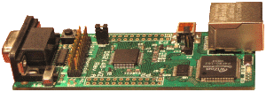

DS2148WZ: LPC2148 ARM7 development board with Ehternet
LPC2148 ARM7 + WIZnet W5300 = small, fast, low power web server for only
$119 
Digital Shortcut Inc. DS2148WZ board combines NXP's LPC2148 ARM7 microcontroller and W5300 network chip by WIZnet Inc. When your project calls for Ethernet or USB interface it gives you a head start in your embedded project design process. This small factor board can be configured as a very efficient web server and still has most of the LPC2148 resources available for your application. The W5300 Ethernet Controller makes complex task of TCP/IP packiet processing and serving web pages no more difficult than working with UART. Just imagine the possibilities of having internet appliance controlled by 1 Watt board capable of serving most of the static content of this very web site with performance on par with "real" servers and with advantage of having a hardware features like USB, PWM, UART, I2C, SPI, AD, DA avaiable. If you are starting a new ARM project, or want to learn about ARM processor and Ethernet or just need a web server for your "coffee maker", it is the perfect board for you.
Features
| Feature | Description | |
|---|---|---|
| Processor |
LPC2148 from NXP
|
 |
| Ethernet |
W5300 from WIZnet
ARP, IGMPv2, PPPoE Ethernet |
|
| Miscellaneous |
|
 |
| Power |
|
|
| Connectors |
with P0 signals (0.1 spacing) |
Only $119, order it online
Fast, Small, Low Power, Easy
|
| Dimensions |
|
Software examples
Please go to our download page and grab "DS2148WZ Software Package" for your board version.
 Home
Home